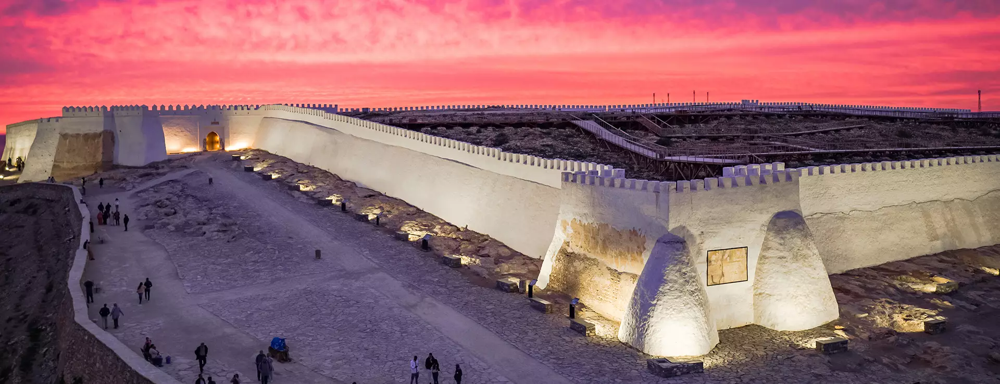
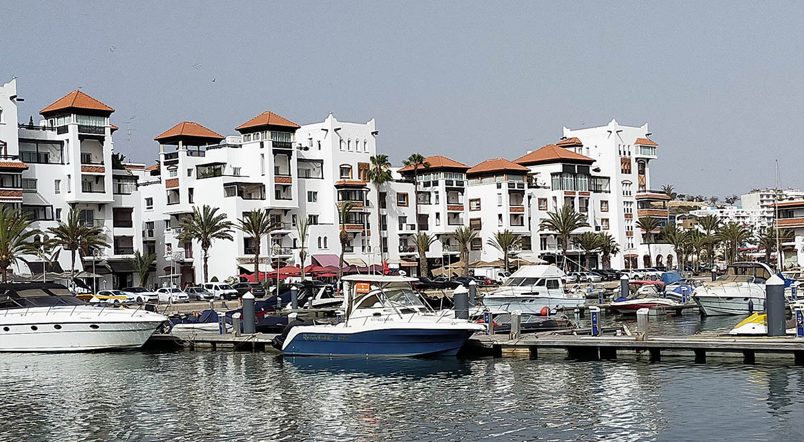
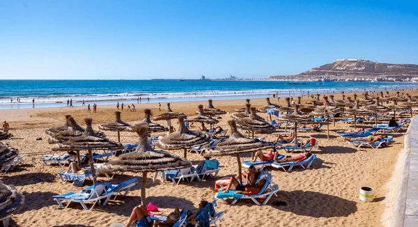
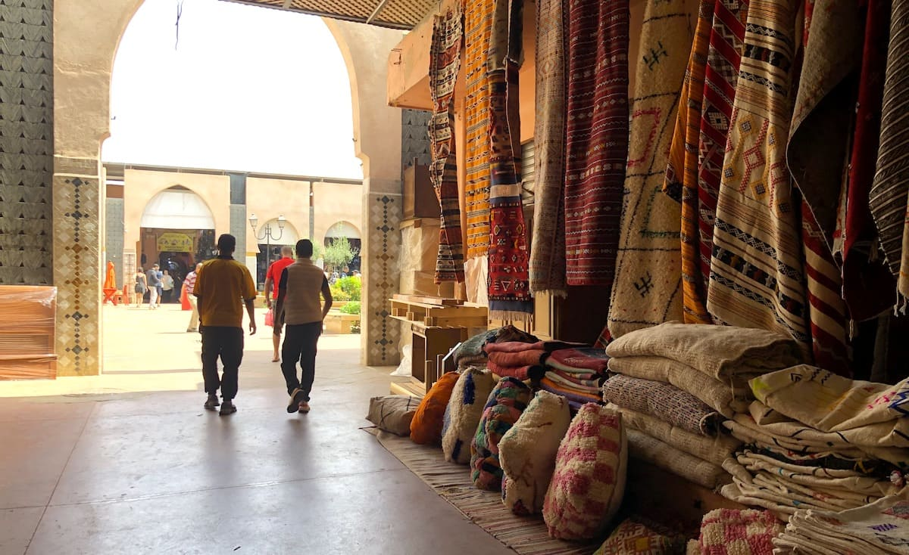
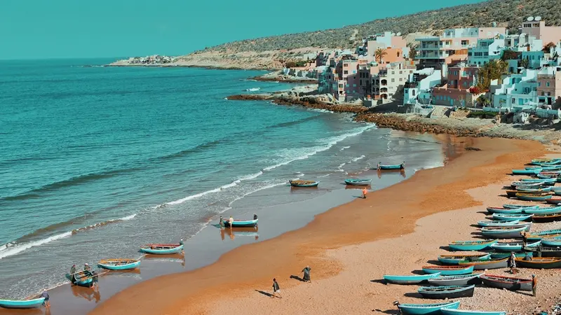
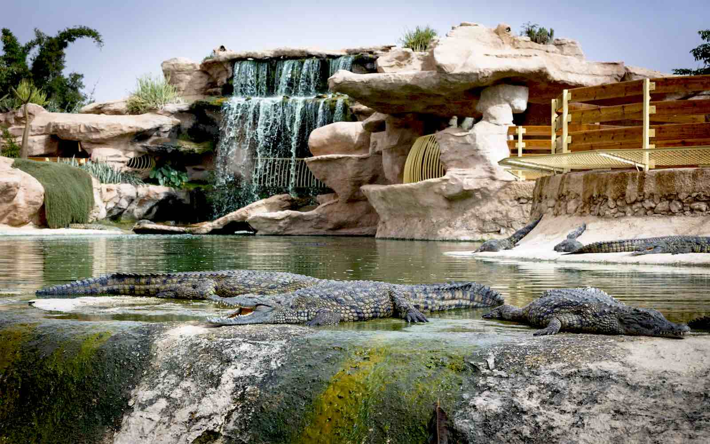

À propos d’Agadir
Agadir est l’une des plus grandes stations balnéaires du Maroc, connue pour sa baie magnifique, ses plages de sable fin et son atmosphère moderne. Entièrement reconstruite après le séisme de 1960, elle est aujourd’hui un centre touristique majeur.
Faits rapides
- Population: ~420k
- Région: Souss-Massa
- Langues: Arabe, Amazigh, Français
- Climat: Océanique chaud, ensoleillé toute l'année
Culture
Agadir offre un mélange d’influences modernes et amazighes. La ville est un centre culturel important du Sud, accueillant des festivals internationaux, des musées et des espaces artistiques valorisant l’héritage amazigh.
On y trouve notamment le Musée du Patrimoine Amazigh et le Festival Timitar.
Artisanat
Tapis amazighs, poterie, bois de thuya.
Musique & Festivals
Festival Timitar, concerts estivaux.
Plages
Baie d’Agadir, Taghazout, Imourane.
Gastronomie
Poissons frais, tajines, cuisine du Souss.
Sites incontournables

Kasbah d’Agadir Oufella
Ruines historiques offrant une vue panoramique sur toute la baie.

Marina d’Agadir
Zone moderne avec restaurants, boutiques et yachts.

Plage d’Agadir
Plage immense idéale pour la détente et les sports nautiques.

Souk El Had
L’un des plus grands souks du Maroc, plus de 3000 boutiques.

Taghazout
Village célèbre pour le surf et les vibes relax.

Crocoparc
Parc unique abritant des centaines de crocodiles.